Eliminating Nonzero Initial States in Flexible Systems through Specified Insensitivity Input Shaping
Joshua Vaughan and Daniel Newman
Department of Mechanical Engineering
University of Louisiana at Lafayette
joshua.vaughan@louisiana.edu
@Doc_Vaughan
http://www.ucs.louisiana.edu/~jev9637/
Motivation
Outline
- Input Shaping Background
- Initial Condition Formulation
- Zero Vibration Solution
- Modeling Error Considerations
- Specified Insensitivity Solution
- Experimental Results
Input Shaping Process
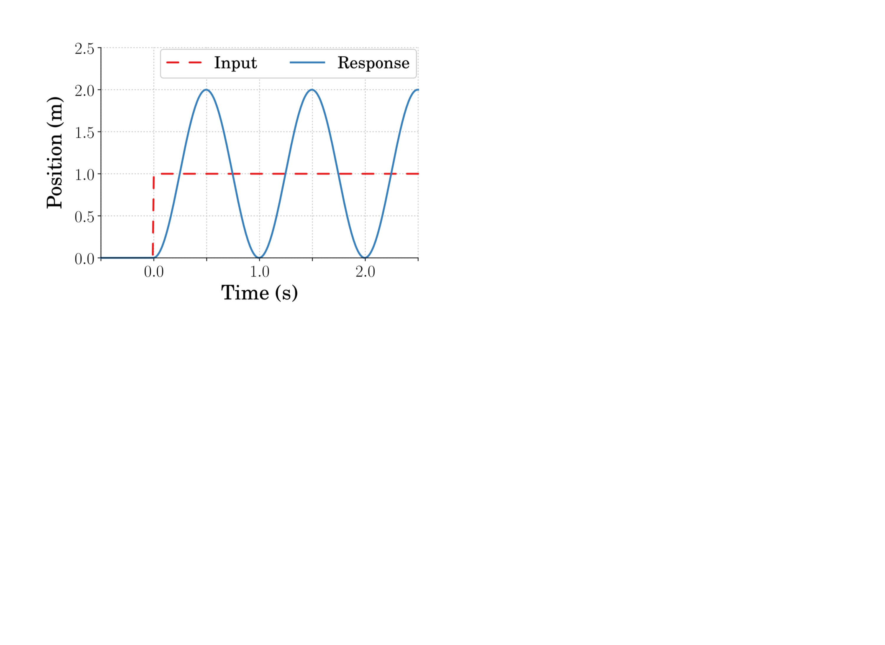
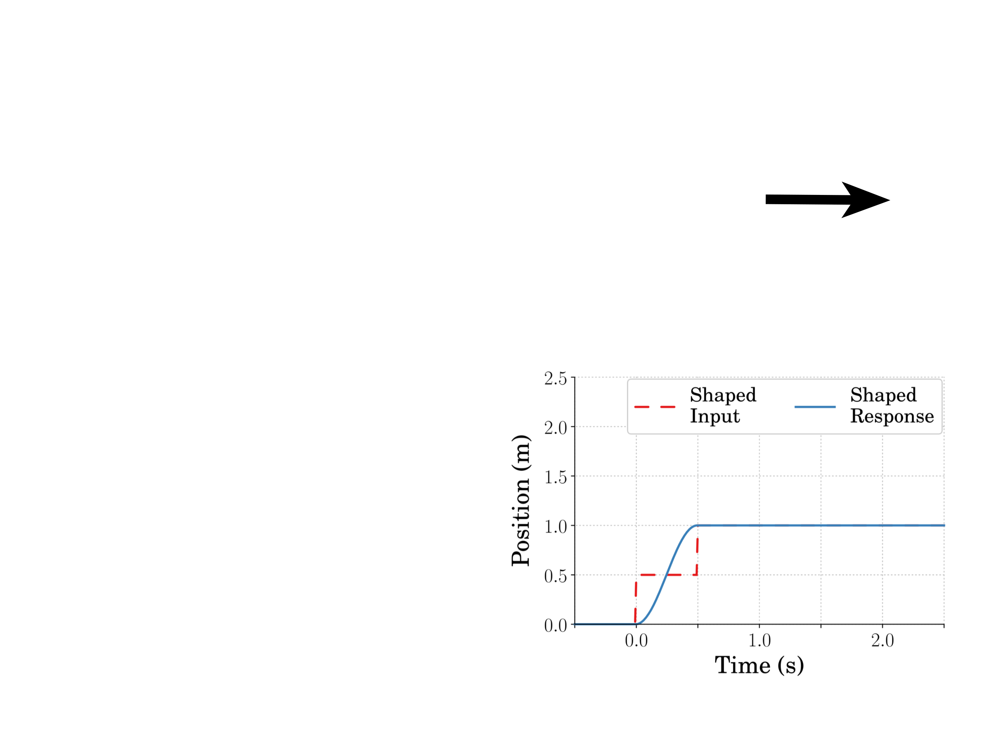
- Input shaper design:
- Natural frequency
- Damping ratio
- $\sum A_i = 1$
Vibration Constraints
$$
\fragment{0}{V(\omega, \zeta) = e^{-\zeta \omega t_n} \sqrt{[C(\omega,\zeta)]^2 + [S(\omega,\zeta)]^2}}
$$
$$
\fragment{1}{C(\omega,\zeta) = \sum_{i=1}^{n} A_i e^{\zeta \omega t_i} \cos \left (\omega \sqrt{1 - \zeta^2} t_i \right )}
$$
$$
\fragment{2}{S(\omega,\zeta) = \sum_{i=1}^{n} A_i e^{\zeta \omega t_i} \sin \left ( \omega \sqrt{1 - \zeta^2} t_i \right )}
$$
The vibration constraint is achieved by setting:
$$
V(\omega, \zeta) \leq V_{tol}
$$
Sensitivity Plots
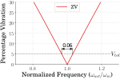

Vector Diagrams
Vector digrams graphically demonstrate shaper performance
The sum of the vectors is proportional to residual vibration
IC Vector Diagram
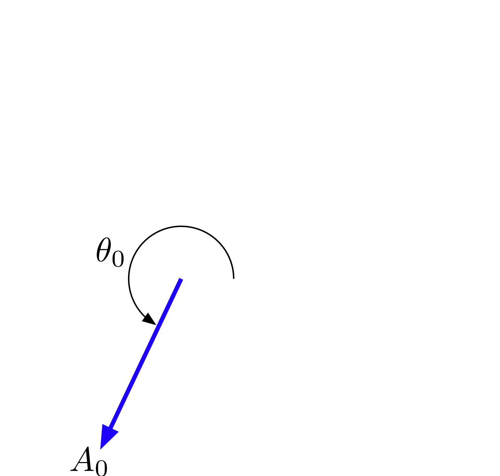
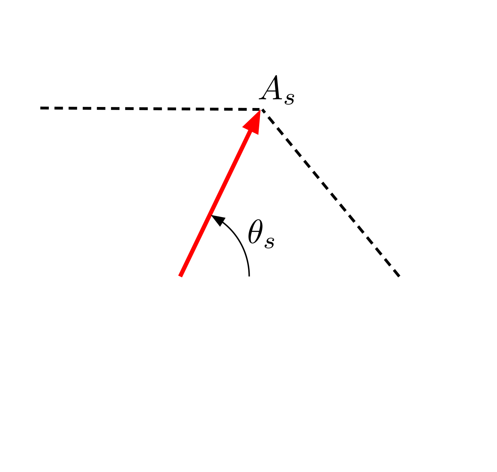
IC Residual Vibration
- Vibration with initial conditions:
- The initial condition terms are:
- Vibration from a unity magnitude impulse:
- Percent Residual Vibration:
\begin{equation}
V(\omega,\zeta,y_{f0},v_{f0}) = \frac{\omega}{\sqrt{1 - \zeta^2}} e^{-\zeta \omega t_n} \sqrt{[C_0 + C]^2 + [S_0 + S]^2}
\end{equation}
\begin{align}
C_0 = A_0 y_{f0} \omega_d & & &
S_0 = A_0 (v_{f0} + \zeta y_{f0} \omega )
\end{align}
\begin{equation}
V_{\uparrow}(\omega,\zeta,y_{f0},v_{f0}) = \frac{\omega}{\sqrt{1 - \zeta^2}} e^{-\zeta \omega t_n} \sqrt{(1 - C_0)^2 + S_0^2}
\end{equation}
\begin{equation}
PRV_{IC} = \frac{V(\omega,\zeta,y_{f0},v_{f0})}{V_{\uparrow}(\omega,\zeta,y_{f0},v_{f0})} \times 100\%
\end{equation}
ZV-IC Shaper Solution
$$
\begin{align}
& \underset{t}{\text{minimize}}
& & t_n \\
& \fragment{1}{\text{subject to}}
& &\fragment{2}{PRV_{IC} = 0}\\
&&&\fragment{3}{A_i > 0}\\
&&&\fragment{4}{\sum_{i=1}^{n} A_i = 1}\\
\end{align}
$$
Simulation Variables
| $\mbox{Variable}$ | $\mbox{Value}$ |
|---|---|
| $\omega_n$ | $14.28\frac{\mbox{rad}}{\mbox{s}}$ |
| $\zeta$ | $0.01$ |
| $A_{max}$ | $0.9\frac{\mbox{m}}{\mbox{s}^2}$ |
| $V_{max}$ | $0.15\frac{\mbox{m}}{\mbox{s}}$ |
| $v_{f0}$ | $0\frac{\mbox{mm}}{\mbox{s}}$ |
| $y_{f0}$ | $0.36\mbox{mm}$ |
ZV-IC Response
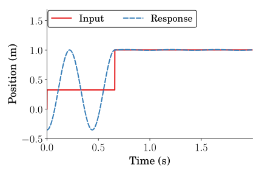
ZV-IC with Error
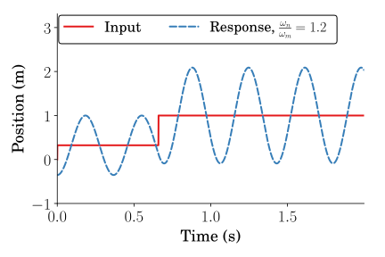
SI-IC Shaper Solution
\begin{equation}
\begin{aligned}
& \underset{t}{\text{minimize}}
& & t_n \\
& \fragment{1}{\text{subject to}}
& & \fragment{2}{PRV_{IC} \leq V_{tol}, \text{ } \forall \omega_1 \leq \omega \leq \omega_2}\\
&&& \fragment{3}{\left | A_i \right | \leq 1}\\
&&& \fragment{4}{\sum_{i=1}^{n} A_i = 1}\\
&&& \fragment{5}{\left |\sum_{i=1}^{k - 1} A_i \right | \leq 1, \text{ } \forall k \in n} \\ %\text{ } n,k=1,2,3...\\
\end{aligned}
\end{equation}
SI-IC Response
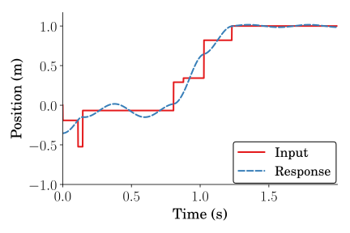
SI-IC with Error
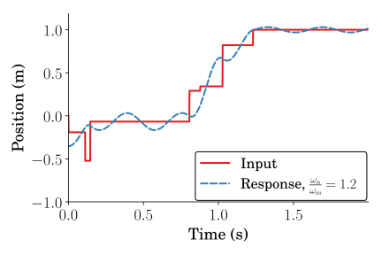
Error Response Comparison
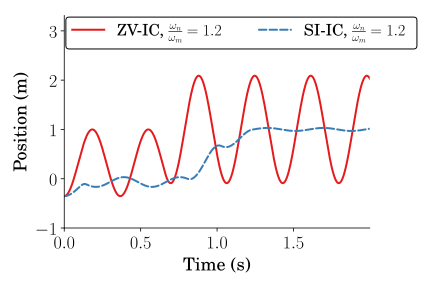
Sensitivity Curves
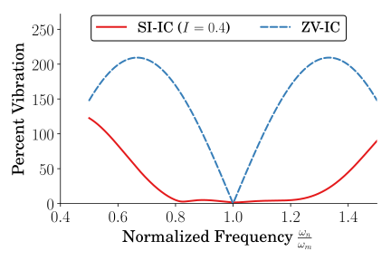
Experimental Setup
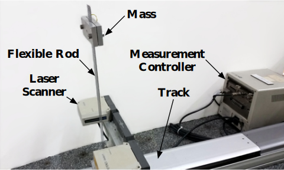
Unshaped Response
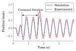
ZV-IC Response
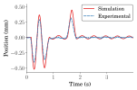
SI-IC Response
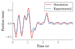
SI-IC Sens Curve
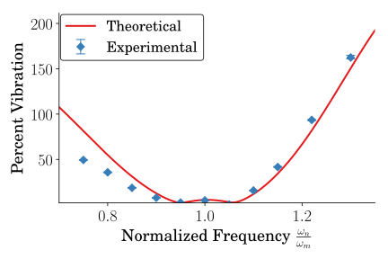
ZV-IC Sens Curve
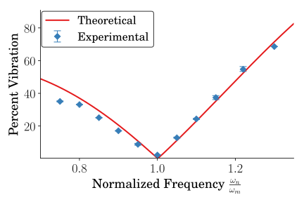
Conclusions
Input shaping constraints can be modified to eliminate nonzero inital conditions.
The non-robust, ZV-IC shaper can be solved in closed-form.
The Specified Insensitivity method can increase robustness to modeling errors.
Acknowledgments